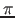

Next: Summary Up: Routines Previous: Operators Contents Index
The second way of using routines is to declare them as
procedures. We have seen that an operator can be
declared and used, have a mode and a value (its routine denotation),
but apart from having an operator symbol, it cannot be identified with
an identifier in the way that a name or a denotation of a
CHAR value can. Procedures are quite different.
Firstly, here are some general remarks on the way procedures differ from operators. The mode of a procedure always starts with the mode constructor PROC. A procedure can have any number of parameters, including none. Two procedures having the same identifier cannot be declared in the same range (so “overloading” is not allowed). When a procedure is used, its parameters, if any, are in a strong context. This means that rowing and widening are available.
Procedures are declared using the mode constructor
PROC. Here is a procedure which creates a range of
characters:
PROC(CHAR,CHAR)[]CHAR range =
(CHAR a,b)[]CHAR:
BEGIN
CHAR aa,bb;
(a<=b|aa:=a; bb:=b|aa:=b; bb:=a);
[ABS aa:ABS bb]CHAR r;
FOR i
FROM LWB r TO UPB r
DO
r[i]:=REPR i
OD;
r
END
This procedure identity declaration resembles the declaration for a multiple: much of the mode is repeated on the right-hand side and the formal-declarer on the left-hand side has no identifiers for the modes of the parameters. Notice that the modes of the parameters must be repeated in the formal-declarer, but that the mode of the procedure on the right-hand side can contain the usual abbreviation. Here is the abbreviated header:
PROC range = (CHAR a,b)[]CHAR:
The formal-declarer is important for creating synonyms:
PROC(REAL)REAL sine = sin
Two or more procedure declarations can be separated by commas, even if the procedures have different modes. Consider, for example:
PROC pa = (INT i)INT: i*i,
pb = (INT i)CHAR: REPR(i*i),
pc = (INT i)REAL: (i=0|0|1/i)
Procedures can have no parameters. Suppose the following names have been declared:
INT i,j
Here is a procedure with mode PROC INT which yields an
INT:
PROC INT p1 = INT: i:=3+j
A procedure can be invoked or called by writing
its identifier. For example, the procedure p1 would be called
by
p1
or
INT a = p1
The right-hand side of this identity declaration requires a value of
mode INT, but it has been given a unit of mode
PROC INT. This is converted into a value of mode INT
by the coercion known as deproceduring. This
coercion is available in every context
(even soft).
Have you realised that print must be the identifier
of a procedure? Well done! However, we cannot talk about its
parameters yet because we don't know enough about the language.
Here is another procedure which yields a name of mode REF
INT. The mode of the procedure is PROC REF
INT:
PROC p2 = REF INT: IF i < 0 THEN i ELSE j FI
and assumes that the names identified by i and
j had already been declared. Here is an identity
declaration which uses p2:
REF INT i or j = p2
Because p2 yields a name, it can be used on the
left-hand side of an assignment:
p2:=4
Here, 4 will be assigned to i or
j depending on the value i refers to. The
left-hand side of an assignment has a soft context
in which only the deproceduring coercion is allowed.
In procedures p1 and p2, the identifier
i had been declared globally to the procedures.
Assignment to such an identifier is, as already stated, a
side-effect. Here is another procedure of mode
PROC INT which uses a global identifier, but does not
assign to it:
PROC p3 = REAL:
(
[i]REAL a; read((a,newline));
REAL sum:=0.0;
FOR i FROM LWB a TO UPB a
DO
sum+:=a[i]
OD;
sum
)
and here is a call of p3:
print(p3)
In the identity declaration
REAL r = p2
p2 is deprocedured to yield a name of mode REF INT,
dereferenced to yield an INT, and then widened to yield a
REAL. All these coercions are available in a strong
context (the right-hand side of an identity
declaration).
The call of a procedure can appear in a formula without parentheses. Here is an example:
p2:=p1 * ROUND p3
If we call the procedure p1, declared above, its value
does not have to be used. For example, in
p1;
the value yielded by p1 has been
voided by the following semicolon after the
procedure had been called.
In the section on routines, we introduced the mode
VOID. Here is a procedure yielding
VOID:
PROC p4 = VOID: print(p3)
and a possible use:
; p4;
where the semicolons show that the call stands on its own.
When a parameterless procedure yields a multiple, the call of that procedure can be sliced to get an individual element. For example, suppose we declare
PROC p5 = [,]REAL:
(
[i,j]REAL a;
read((a,newline));
a
)
where i and j were declared above, and
then call p5 in the formula
REAL x = p5[i-3,j] * 2
When p5 is called, it yields a two-dimensional
multiple of mode [,]REAL which is then sliced using the
two subscripts (assuming that i-3 is
within the bounds of the first dimension) to yield a value of mode
REAL, which is then used in the formula.
Procedure p2, declared above, yielded a name declared
globally to the procedure. As explained in the sections on routines, a
procedure cannot yield a locally-generated name. However, if the name
is generated using HEAP, then the name can
be yielded as in p6:
PROC p6 = REF INT: (HEAP INT i:=3; i)
Here is a call of p6 where the yielded name is
captured with an identity declaration:
REF INT global int = p6
Then print(global int) will display
3.
The yield of a procedure can be another procedure. Consider this program fragment:
PROC q2 = INT: max int % 2,
q3 = INT: max int % 3,
q4 = INT: max int % 4,
q5 = INT: max int % 5;
INT i; read((i,newline));
PROC q = PROC INT:
CASE i+1 IN q2,q3,q4 OUT q5 ESAC
Procedure q will yield one of the predeclared procedures
depending on the value of i. Here, the yielded procedure will
not be deprocedured because the mode required is a procedure.
One parameterless procedure is provided in the standard prelude. Its identifier is random, and when called returns the next pseudo-random real number of a series. If called a large number of times, the numbers yielded are uniformly distributed in the range [0,1].
![[*]](answer.png)
REF[,]CHAR. Ans
Parameters of procedures can have any mode (including procedures). Unlike operators, procedures can have any number of parameters. The parameters are written as a parameter list which consists of one parameter, or two or more separated by commas.
Here is a procedure with a single parameter:
PROC(INT)CHAR p7 = (INT i)CHAR: REPR(i>0|i|0)
This is a full identity declaration for p7. It can be
abbreviated to
PROC p7 = (INT i)CHAR: REPR(i>0|i|0)
The mode of p7 is PROC(INT)CHAR. That is,
p7 is a procedure with a single integer parameter and
yielding a character. Here is a call of
p7:
CHAR c = p7(-3)
Note that the single parameter is written between
parentheses. Since the context of an actual
parameter of a procedure is strong, a name of mode
REF INT could be used:
CHAR c = p7(i)
or
CHAR c = p7(ai[j])
where ai has mode REF[]INT and
j has mode INT or REF INT or
PROC INT (or even PROC REF INT).
Here is a procedure which takes three parameters:
PROC char in string =
(CHAR c,REF INT p,STRING s)BOOL:
(
BOOL found:= FALSE;
FOR k FROM LWB s TO UPB s
WHILE NOT found
DO
(c = s[k] | i:=k; found:= TRUE)
OD;
found
)
The procedure (which is in the standard
prelude) tests whether a character is in a string, and if it is,
returns its position in the parameter p. The procedure
yields TRUE if the character is in the string, and
FALSE if not. Here is a possible call of the
procedure:
IF INT p; char in string(char,p,"abcde") THEN ...
where char was declared in an outer range. Notice that
the REF INT parameter of char in string is
not assigned a new value if the character is not found in the
string.
When calling a procedure, the call must supply the same number of actual parameters, and in the same order, as there are formal parameters in the procedure declaration.
If a multiple is one of the formal parameters, a row-display can be supplied as an actual parameter (remember that a row-display can only occur in a strong context). In this case, the row-display counts as a single parameter, but the number of elements in the row-display can differ in successive calls since the bounds of the multiple can be determined by the procedure using the bounds interrogation operators. Here is an example:
PROC pb = ([]INT m)INT:
(INT sum:=0;
FOR i FROM LWB m TO UPB m DO sum+:= m[i] OD;
sum)
and here are some calls of pb:
pb((1,2,3)) pb((2,3,5,7,11,13))
Again, procedures with parameters can assign to, or use, globally declared names and other values, but it is better to include the name in the header of the procedure. Here is a procedure which reads data into a globally declared multiple using that multiple as a parameter:
PROC rm = (REF[]REAL a)VOID:
read((a,newline))
It could now be called by
rm(multiple)
where multiple had been previously declared as having
mode REF[]REAL.
As described in
section 6.1.3, a flexible
name can be used as an actual parameter provided
that the formal parameter has also been declared as being flexible.
For example, here is a procedure which takes a single parameter of
mode REF STRING and which yields an
INT:
PROC read line = (REF STRING s)INT:
(
read((s,newline));
UPB s #LWB is 1#
)
read line reads the next line of characters from the keyboard,
assigns it to its parameter, which is a flexible name, and yields the
length of the line.
REF REAL parameter,
divides the value it refers to by , multiplies it by 180,
assigns the final value to its parameter, and yields the parameter
(that is, its name). Ans
STRING and the second mode INT. Display the
string on the screen the number of times given by the integer. If the
integer is negative, display a newline first and then use the
absolute value (use the operator ABS) of the integer. Yield
the mode VOID. Ans
num in multiple, which
does for an integer what char in string does for a character.
Ans
Here is a procedure which takes a procedure as a parameter:
PROC sum = (INT n,PROC(INT)REAL p)REAL:
(
REAL s:=0;
FOR i TO n DO s+:=p(i) OD;
s
)
Notice that the mode of the procedure
parameter is a formal mode so no
identifier is required for its INT parameter in the header of
the procedure sum. In the loop clause, the procedure is called
with an actual parameter.
When a parameter must be a procedure, there are two ways in which it can be supplied. Firstly, a predeclared procedure identifier can be supplied, as in
PROC pa = (INT a)REAL: 1/a; sum(34,pa)
Secondly, a routine denotation can be supplied:
sum(34,(INT a)REAL: 1/a)
A routine denotation is a unit. In this case,
the routine denotation has the mode PROC(INT)REAL, so it
can be used in the call of sum. Notice also that,
because the routine denotation is an actual parameter, its header
includes the identifier a. In fact, routine denotations
can be used wherever a procedure is required, so long as the
denotation has the required mode. The routine denotation given in the
call is on the right-hand side of the implied identity declaration of
the elaboration of the parameter. It is an example of an
anonymous routine denotation.
sum in the text, what is
the value of: Ans
sum(4,(INT a)REAL: a)
sum(2,(INT b)REAL: 1/(5*b))
sum(0,pa) (pa is declared in the text)
One of the fun aspects of using procedures is that a procedure can call itself. This is known as recursion. For example, here is a simplistic way of calculating a factorial:
PROC factorial = (INT n)INT:
(n=1|1|n*factorial(n-1))
Try it with the call
factorial(7)
Here is another recursively defined procedure which displays an integer on the screen in minimum space:
PROC ai = (INT i)VOID:
IF i < 0 THEN print("-"); ai(ABS i)
ELIF i < 10 THEN print(REPR(i+ABS"0"))
ELSE ai(i%10); ai(i MOD 10)
FI
In each of these two cases, the procedure includes a test which chooses between a recursive call and phrases which do not result in a recursive call. This is necessary because, otherwise, the procedure would never complete. Neither of these procedures uses a locally declared value. Here is one which does:
PROC new fact = (INT i)INT: IF INT n:=i-1; n = 1 THEN 2 ELSE i*new fact(n) FI
The example is somewhat artificial, but illustrates the point. If
new fact is called by, for example, new
fact(3), then in the first call, n will have the
value 2, and new fact will be called again
with the parameter equal to 2. In the second call,
n will be 1, but this n this
time round will be a new n, with the first n
inaccessible (it being declared in an enclosing
range). new fact will yield
2, and this value will be used in the formula on
line 4 of the procedure. The first call to new fact
will then exit with the value 6.
Apart from being fun, recursive procedures can be an efficient way of programming a particular problem. Chapter 11 deals with, amongst other topics, recursive modes, and there, recursive programming comes into its own.
A different form of recursion, known as mutual recursion, is exemplified by two procedures which call each other. You have to ensure there is no circularity. The principal difficulty of how to use a procedure before it has been declared is overcome by first declaring a procedure name and then assigning a routine denotation to the procedure name after the other procedure has been declared. Here is a simple example:7.3
PROC(INT)INT pb; PROC pa = (INT i)INT: (i>0|pb(i-1)|i); pb:=(INT i)INT: (i<0|pa(i+1)|i);
Then pa(4) would yield 3 and
pa(-4) would yield -4. Similarly,
pb(4) would yield 4 and pb(-4)
would yield -3. Notice that the right-hand side of the
assignment is an anonymous routine denotation.
[]CHAR. It should yield a value also of mode
[]CHAR. Ans
INT. The first should call
the second if the parameter is odd, and the second should call the
first if the parameter is even. The alternative option should yield the
square of the parameter for the first procedure and the cube of the
parameter for the second procedure. Use square and cube
as the procedure identifiers. Ans
The standard prelude contains the declarations of more than 60 procedures, most of them concerned with transput (see chapter 9). A number of procedures, all having the mode
PROC(REAL)REAL
are declared in the standard prelude and yield the values of common
mathematical functions. These are sqrt,
exp, ln,
cos, sin,
tan, arctan,
arcsin and
arccos. Naturally, you must be careful to
ensure that the actual parameter for sqrt is
non-negative, and that the actual parameter for ln is
greater than zero. The procedures cos, sin
and tan expect their REAL parameter to be in
radians.
New procedures using these predeclared procedures can be declared:
PROC sinh =
(REAL x)REAL: (exp(x) + exp(-x))/2
A variety of pseudo-random numbers can be produced using
random int. The mode of the procedure random
int is
PROC(INT)INT
and yields a pseudo-random integer greater than or equal to one, and less than or equal to its integer parameter. For example, here is a procedure which will compute the percentage of each possible die throw in 10 000 such throws:
PROC percentage = []REAL:
(
PROC throw = INT: random int(6);
[6]REAL result:=(0,0,0,0,0,0);
TO 10 000 DO result[throw]+:=1 OD;
FOR i FROM LWB result TO UPB result
DO result[i] /:= 10 000 OD;
result
)
Notice that percentage has another procedure
(throw) declared within it. There is no limit to such
nesting.
Since a procedure is a value, it is possible to declare values whose modes include a procedure mode. For example, here is a multiple of procedures:
[]PROC(REAL)REAL pr = (sin,cos,tan)
and here is a possible call:
pr[2](2)
which yields -0⋅416 146 836 5. We could also declare a procedure which could be called with the expression
pr(2)[2]
but this is left as an exercise.
Similarly, names of procedures can be declared and can be quite useful. Instead of declaring
PROC pc = (INT i)PROC(REAL)REAL: pr[i]
using pr declared above, with a possible call of
pc(2) we could write
PROC(REAL)REAL pn:=pr[i]
and then use pn instead of pc. The advantage of this
would be that pr would be subscripted only once instead of
whenever pc is elaborated. Furthermore, another procedure
could be assigned to pn and the procedure it refers to again
called. Using pn would usually involve
dereferencing.
There are scoping problems involved with procedure names. Although the scope of a denotation is global, procedure denotations may include an identifier whose range is not global. For this reason, the scope of a procedure denotation is limited to the smallest enclosing clause containing a declaration of an identifier or mode or operator indicant which is used in the procedure denotation.
For example, in this program fragment
PROC REAL pp; REAL y;
BEGIN
REAL x:=3.0;
PROC p = REAL: x:=4.0;
print(p);
pp:=p; CO wrong CO
print(x)
END;
print(("pp=",pp)) #wrong#
the assignment in line 6 is wrong because the scope of the right-hand side is less than the scope of the left-hand side. Unfortunately, the a68toc compiler does not perform scope checking and so will not flag the incorrect assignment.
There are times when SKIP is useful in a procedure declaration:
PROC p = REAL:
IF x<0
THEN print("Negative parameter"); stop; SKIP
ELSE sqrt(x)
FI
The yield of the procedure is REAL, so each part of
the conditional clause must yield a value of mode
REAL. The construct stop yields
VOID, and even in a strong context,
VOID cannot be coerced to REAL. However,
SKIP will yield an undefined value of any required mode.
In this case, SKIP yields a value of mode
REAL, but the value is never used, because the program is
terminated just before.
Grouping your program into procedures helps to keep the logic simple at each level. Nesting procedures makes sense when the nested procedures are used only within the outer procedures. This topic is covered in greater depth in chapter 12.
Sian Mountbatten 2012-01-19